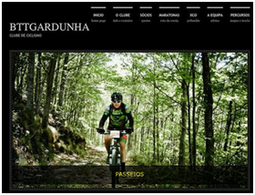

Taça de Portugal de BTT no Fundão
A prova de ciclismo disputou-se no fim-de- semana, no Parque do Convento.
A terceira etapa da Taça de Portugal de XCO em BTT Categoria Internacional C3 disputa-se na cidade do Fundão. A prova organizada pelo Município do Fundão, BTTGardunha – Clube de Ciclismo, Federação Portuguesa de Ciclismo e Union Cycliste Internationale decorre no fim-de-semana, dias 17 e 18, no Parque do Convento. A etapa é composta por categorias para todas as idades e ambos os sexos (Cadetes, Juniores, Sub-23, Elites e Masters).
De acordo com o programa, no sábado decorrem os treinos, a partir das 10h15, para a primeira de duas sessões. A competição a sério é domingo, com três corridas. A primeira às 10h00, a segunda às 12h30 e, por fim, às 14h45 tem início a Corrida 3.
“Com este evento pretende-se inscrever a Serra da Gardunha como um dos locais de eleição para a prática de BTT, realizando uma prova de alto nível nacional, com um percurso de 4500 metros de comprimento”, Segundo a Câmara do Fundão.
publicado em: quarta-feira, 14 de Maio de 2014